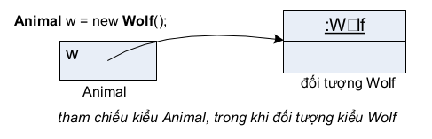
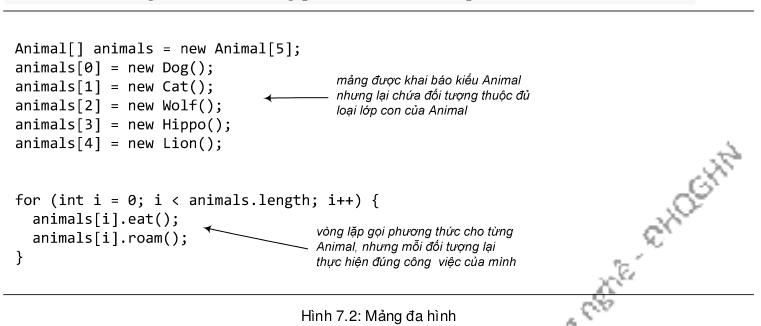
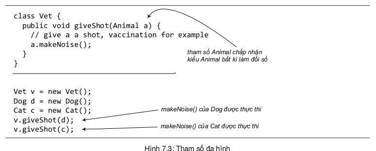

Trước khi trình bày về đa hình, ta nhắc lại một chút về cách khai báo một tham chiếu và tạo một đối tượng.
Nếu muốn nói thật chính xác thì phải là "tất cả các phương thức thừa kế được". Tạm thời, nó có nghĩa là "các phương thức public", nhưng ta sẽ tinh chỉnh định nghĩa này sau.
Trong ví dụ trên, tham chiếu w được khai báo bằng lệnh Wolf w, đối tượng lớp Wolf được khai báo bằng lệnh new Wolf. Điểm đáng chú ý là kiểu của biến tham chiếu và kiểu của đối tượng cùng là Wolf.
Với đa hình thì sao? Đây là ví dụ: w được khai báo thuộc kiểu Animal, trong khi đối tượng vẫn được tạo theo kiểu Wolf:
Với đa hình, tham chiếu có thể thuộc kiểu lớp cha của lớp của đối tượng được tạo. Khi ta khai báo một biến tham chiếu thuộc kiểu lớp cha, nó có thể được gắn với bất cứ đối tượng nào thuộc một trong các lớp con.
Đặc tính này cho phép ta có những thứ thú vị kiểu như mảng đa hình. Ví dụ, trong Hình 7.2, ta khai báo một mảng kiểu Animal, nghĩa là một mảng để chứa các đối tượng thuộc loại Animal. Nhưng sau đó ta lại gắn vào mảng các đối tượng thuộc các lớp con tùy ý của Animal. Và vòng lặp duyệt mảng sau đó là phần thú vị nhất liên quan đến đa hình – ý trọng tâm của ví dụ. Tại đó, ta duyệt từ đầu đến cuối mảng, với mỗi phần tử mảng, ta gọi một trong các phương thức Animal từ tham chiếu kiểu Animal. Khi i chạy từ 0 tới 4, animals[i] lần lượt chiếu tới một đối tượng Dog, Cat, Wolf, Hippo, Lion. Kết quả của animals[i].eat() hay animals[i].roam() đều là: mỗi đối tượng thực hiện đúng phiên bản thích hợp với loại của chính mình.
Tính đa hình còn có thể thể hiện ở kiểu dữ liệu của đối số và giá trị trả về.
Trong ví dụ Hình 7.3, tại phương thức giveShot(), tham số Animal chấp nhận đối số thuộc kiểu Animal bất kỳ. Đoạn mã bên dưới đã gọi giveShot() lần lượt với đối số là các đối tượng Dog và Cat. Sau khi bác sĩ thú y (Vet) tiêm xong, makeNoise() được gọi từ trong phương thức giveShot() cho đối tượng Animal mà a đang chiếu tới. Mặc dù a là tham chiếu thuộc kiểu Animal, nhưng đối tượng nó chiếu tới thuộc lớp nào quyết định phiên bản makeNoise() nào được chạy. Kết quả là phiên bản của Dog được chạy cho đối tượng Dog, và phiên bản của Cat được chạy cho đối tượng Cat.
Như vậy, với đa hình, ta có thể viết những đoạn mã không phải sửa đổi khi ta bổ sung lớp con mới vào chương trình. Lấy ví dụ lớp Vet trong ví dụ vừa rồi, do sử dụng tham số kiểu Animal, phần mã này có thể dùng cho lớp con bất kỳ của Animal. Bên cạnh các lớp Lion, Tiger...sẵn có, nếu ta muốn bổ sung loài động vật mới, chẳng hạn Cow, trong khi vẫn muốn tận dụng lớp Vet, ta chỉ cần cho lớp mới đó là lớp con của Animal. Khi đó, các phương thức của Vet vẫn tiếp tục hoạt động được với lớp mới, mặc dù khi viết Vet ta không có chút thông tin gì về các loại con của Animal mà nó sẽ hoạt động cùng.
Tóm lại, đa hình là gì? Theo nghĩa tổng quát, đa hình là khả năng tồn tại ở nhiều hình thức. Trong hướng đối tượng, đa hình đi kèm với quan hệ thừa kế và có hai đặc điểm sau: (1) các đối tượng thuộc các lớp dẫn xuất khác nhau có thể được đối xử nhau, như thể chúng là các đối tượng thuộc lớp cơ sở, chẳng hạn có thể gửi cùng một thông điệp tới đối tượng; (2) khi nhận được cùng một thông điệp đó, các đối tượng thuộc các lớp dẫn xuất khác nhau hiểu nó theo những cách khác nhau.
Ta đã thấy đặc điểm thứ nhất thể hiện ở việc ta có thể dùng tham chiếu kiểu lớp cha để chiếu tới các đối tượng thuộc lớp con như thể chúng đều là các đối tượng thuộc lớp cha, trong các ví dụ gần đây là tham số Animal chấp nhận các đối số kiểu Dog và Cat, Vet đối xử với các loại con của Animal một cách thống nhất như thể chúng đều thuộc loại Animal. Đặc điểm thứ hai thể hiện ở việc khi ta gọi phương thức của đối tượng từ tham chiếu kiểu cha, phiên bản được gọi tùy theo đối tượng thuộc loại cụ thể gì. Kết quả của cùng một lệnh a.makeNoise() là makeNoise() của Dog được gọi nếu a đang chiếu tới đối tượng Dog, makeNoise() của Cat được gọi nếu a đang chiếu tới đối tượng Cat.